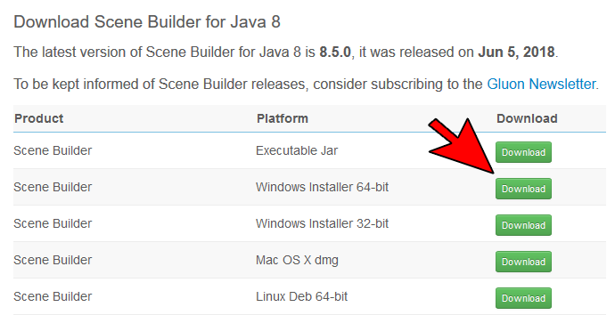
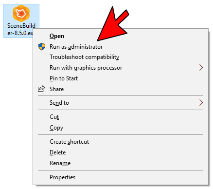
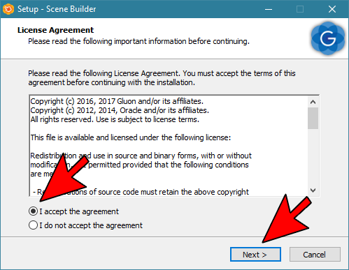
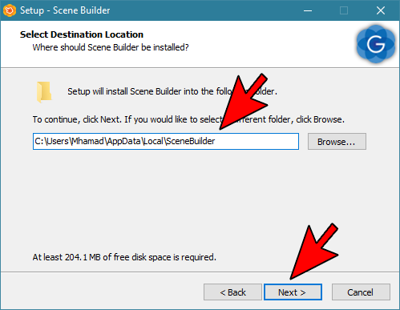
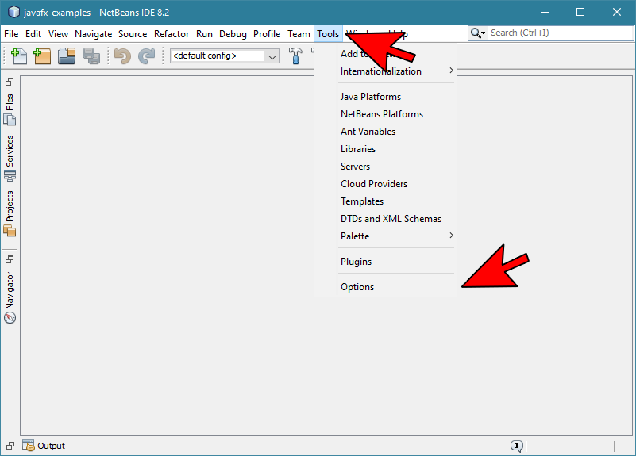
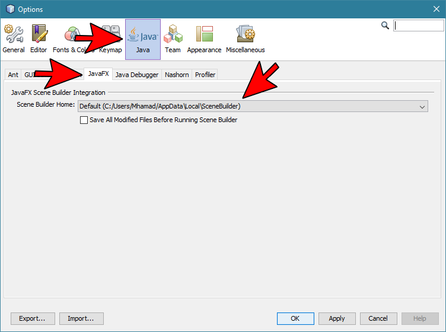
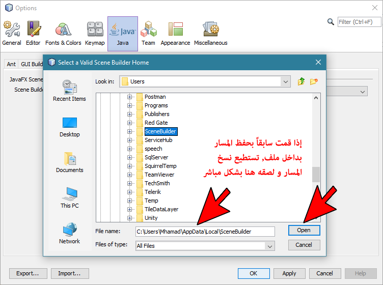
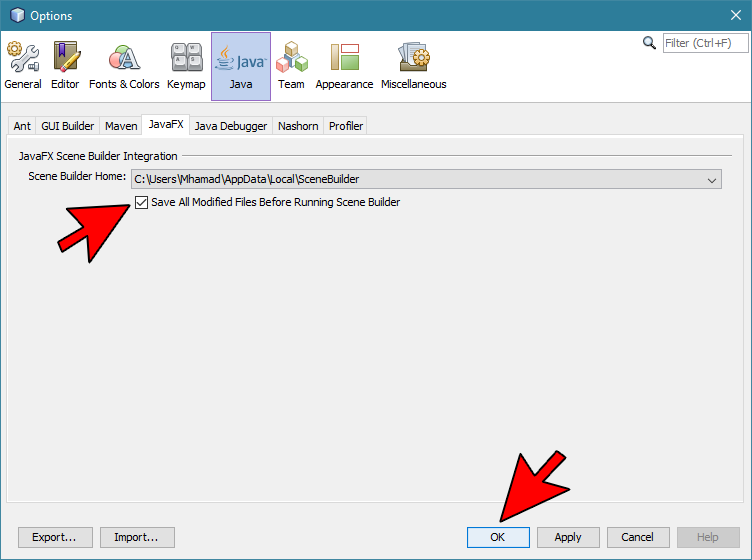
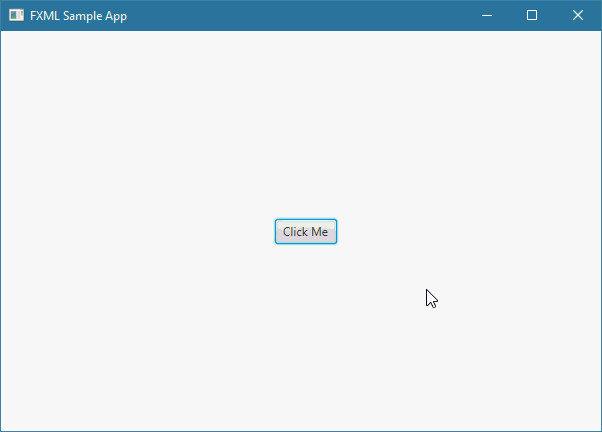

JavaFXScene Builder
مقدمة
كل الدروس التي درستها قبل أن تصل لهذا الدرس كان الهدف منها تعليمك كيف تتعامل مع الأشياء الجاهزة في JavaFX و جعلك تعتاد على التعامل معها لهذا كنا نقوم بكتابة كل كود البرامج حتى نحدد ما سيتم عرضه في النافذة.
في هذا الدرس سنعلمك كيف تستخدم برنامج Gluon لبناء واجهة المستخدم للبرامج التي تقوم بإنشائها في JavaFX بدون الحاجة إلى كتابة أي كود.
ملاحظة: Gluon هو برنامج مجاني تم تطويره خصيصاً لجعل المطورين قادرين على بناء واجهة المستخدم بأسلوب السحب و الإفلات ( Drag & Drop ).
خطوات تحميل و تنصيب برنامج Gluon
في البداية و قبل أي شيء يجب أن تنتبه لإصدار برنامج Gluon الذي ستقوم بتحميله لأنه يجب أن يكون متوافق مع إصدار JavaFX حتى يعمل بدون أي مشاكل مع الإشارة إلى أنه يوجد إختلافات بسيطة جداً بين كل إصدار جديد من هذا البرنامج.
و بالتالي فإنك بمجرد أن تتعلم إستخدام أي إصدار من برنامج Gluon لن تواجه مشكلة في استخدام أي إصدارات جديدة منه مستقبلاً.
الآن, لتحميل و تنصيب برنامج خطوات تحميل برنامج Gluon إتبع الخطوات التالية:
لتحميل برنامج Gluon نذهب لصفحة التحميل من الموقع الرسمي له إنتقل للموقع »
إستمر في النزول في الصفحة حتى تجد الإصدار المناسب لإصدار JavaFX أو إصدار JDK الموجود على جهازك.
في حالتنا سنقوم بتنصيب الإصدار 8 الخاص بنظام ويندوز.

بعد تحميل البرنامج بنجاح, يجب أن نبدأ بتنصيبه.
للبدء بتنصيب البرنامج, أنقر بزر الفأرة الأيمن علي الملف الذي قمت بتحميله, ثم أنقر على الخيار Run as administrator.

أنقر على الخيار I accept the agreement.
أنقر على الزر Next.

قم باختيار المكان الذي تريد أن يتم تنصيب البرنامج فيه أو أبقي المسار الإفتراضي الذي تجده ظاهراً.
إنتبه: لا تنسى أين قمت بتنصيب البرنامج لأنك ستحتاج معرفة أين قمت بتنصيبه بعد قليل.
لضمان أن لا تنسى أين قمت بتنصيبه, يمكنك نسخ المسار و تخزينه بشكل مؤقت بداخل ملف نصي عادي إذا أردت.
أنقر على الزر Next.

ملاحظة
بعد تنصيب برنامج Gluon بنجاح, في حال ظهرت لك أي نافذة من برنامج Gluon قم بإغلاقها فقط و تابع الدرس.
خطوات تعيين برنامج Gluon كمحرر في برنامج Netbeans
بعد أن قمت بتنصيب برنامج Gluon بنجاح على حاسوبك, بقي عليك إعلام برنامج Netbeans أنك تريد تعيين برنامج Gluon كمحرر إفتراضي للواجهات التي تبنيها في JavaFX. هذه الخطوة نفعلها لسبب واحد و هو أن لا نضطر إلى فتح برنامج Gluon بأنفسنا عندما نريد تعديل تصميم الواجهات, بل نريد أن يتم فتحه بشكل تلقائي عندما ننقر على أي ملف يمثل واجهة مستخدم.
لتعيين برنامج Gluon كمحرر في برنامج Netbeans إتبع الخطوات التالية:
إفتح برنامج Netbeans.
أنقر على Tools و من ثم اختر Options.

أنقر على Java و من ثم اختر JavaFX.
تأكد من أن تقوم بتحديد المسار الذي قمت فيه بتنصيب برنامج Gluon بشكل صحيح في حال لم تجد أنه موضوع إفتراضياً بشكل صحيح.
ملاحظة: لا تقلق إذا لم تجد مسار برنامج Gluon موضوع بشكل صحيح كما وجدناه, اتبع الخطوة التالية لتعرف كيف تفعل ذلك.

لتحديد المسار الموجود فيه برنامج Gluon بشكل صحيح أنقر على المسار الذي يظهر لك حالياً. بعدها ستظهر لك كلمة Browse, أنقر عليها.
إذهب للمسار الذي قمت فيه بتنصيب برنامج Gluon و الذي طلبنا منك أن تحفظ مكانه منذ قليل.
بعد تحديد المسار بشكل صحيح, أنقر على الزر Open.

ضع علامة صح على الخيار Save All Modified Files Before Running Scene Builder.
أنقر على الزر OK حتى يتم حفظ التغيرات.

إلى هنا نكون أصبحنا قادرين على استخدام برنامج Gluon بكل سهولة من أجل تصميم أي واجهة مستخدم.
الأسلوب الجديد في تصميم البرامج
الأسلوب الذي ستعتمده من الآن فصاعداً لتصميم أي واجهة مستخدم, سيكون مختلف عن ما تعلمته سابقاً حيث أن النافذة الواحدة ستصبح عبارة عن ملفين أو ثلاث ملفات كالتالي:
ملف نوعه FXML يوضع فيه كل الأشياء التي ستظهر في النافذة.
ملف جافا عادي نضع فيه الأوامر التي نريد تنفيذها عندما يتفاعل المستخدم مع أي شيء أضفناه في النافذة التي رسمناها بكود FXML.
ملف نوعه CSS تضع فيه أي كود CSS تريد من أجل تعديل تصميم النافذة أكثر إذا أردت.
ملاحظة: لست مجبر على وضع ملف CSS خاص لكل نافذة في التطبيق لكنك تستطيع ذلك إن أردت.
معلومة تقنية
عندما تقوم باستخدام برنامج Gluon لإنشاء واجهة المستخدم, فإنه سيقوم بكتابة كل كود الـ FXML عنك.
لذلك كن على يقين بأن الأسلوب الجديد الذي ستتعلمه من أجل بناء واجهة المستخدم هو أسلوب سهل جداً و غير معقد على الإطلاق.
نستنتج
دور برنامج Gluon هو جعلك قادر على تصميم الواجهة بشكل إحترافي بدون الحاجة إلى كتابة أي كود FXML بنفسك.
و دور برنامج Netbeans هو جعلك قادر على كتابة الأوامر التي تريدها أن تتنفذ عندما يتفاعل المستخدم مع واجهة المستخدم.
أفضل طريقة لإختيار أسماء للملفات
بما أن كل واجهة مستخدم ستكون عبارة عن ملفين أو ثلاثة فالأفضل أن تتبع أسلوب منظم من أجل تسمية كل ملفات المشروع.
فمثلاً, إذا أردت إنشاء نافذة تسجيل دخول ( Login Page ), يمكنك تسمية الملفات الخاصة بها كالتالي:
Login.fxml
LoginController.java
Login.css
هذه الطريقة ستساعدك في إيجاد الملفات الخاصة بكل نافذة بسرعة حتى لو أصبح المشروع يحتوي على عدد كبير من الملفات.
تصميم أول واجهة مستخدم بواسطة برنامج Gluon
هنا وضعنا مثال يعلمك طريقة تصميم و برمجة واجهة مستخدم بسيطة باستخدام برنامجي Gluon و Netbeans.
كما وضعنا السورس كود للمشروع في حال أردت تحميله.

شاهد المثال »
نصيحة لإحتراف التعامل مع برنامج Gluon
لتطوير نفسك أكثر في بناء واجهات المستخدم بواسطة برنامج Gluon, قم فقط بمشاهدة أي دورة تجدها في يوتيوب سواء كانت هذه الدورة عربية أو إنجليزية.
و ننصحك بشدة أن تشاهد دورات إنجليزية لأنه يوجد دورة كثيرة و ذات جودة عالية مقارنة بالدورات العربية.
و لا تخف من التجربة لأنك لن تجد أي صعوبة إن شاء الله عند مشاهدة دورة إنجليزية حيث أنك سبق و تعلمت معظم أساسيات JavaFX من موقعنا.
لمشاهدة كل الدورات الإنجليزية المتوفرة في يوتيوب إنتقل للدورات »
بالنسبة للدورات العربية, فللأسف لم نجد أي دورة ذات فائدة عالية أو تعلمك أكثر مما شرحناه في الموقع لهذا لم نضع أي رابط.

 محرر الويب
محرر الويب نظام الألوان
نظام الألوان محول الوحدات
محول الوحدات محلل عناوين الشبكات
محلل عناوين الشبكات